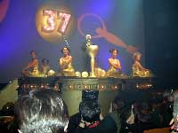

The Stars Come Out in Karlovy Vary
feature by Eddie
Cockrell,
5 July 2002
(Karlovy Vary, Czech Republic, 05 July) Sean Connery, Michael York, Stellan Skarsgard, critic Roger Ebert and Deliverance director John Boorman are just a few of the international stars either already in attendance or expected shortly for the thirty-seventh edition of this sprawling but somehow intimate festival in the spa city of Karlovy Vary, about an hour west of Prague by speeding festival limousine.
Close to three hundred films will unspool in some thirteen programmatic sections throughout the festival, which opened 04 July with a gala screening of the Czech rock’n’roll mockumentary Year of the Devil and runs until 13 July, when brothers and American Pie directors Paul and Chris Weitz will present the Czech premiere of the Hugh Grant comedy About a Boy.
There’s a competition section for fiction features and another for documentaries, which is where most of the festival surprises (good and bad) will be revealed. The handful of special event screenings include York presenting the 1972 Bob Fosse musical Cabaret, Boorman presiding over his own private print of Deliverance. The section dubbed "Horizons" gathers films with hot word-of-mouth from other festivals, while the "Forum of Independents" spotlights more adventurous international production. "East of the West" offers rare glimpses of films from the other half of Europe, while Czech films themselves are displayed in their very own sidebar.
The competition jury is headed by French actor-director Jean-Marc Barr, and members include Spanish actress Assumpta Serna, Legend of Rita star Bibiana Beglau and Ebert (who received a wild round of applause when he was introduced to the throng on opening night).
One of the more distinctive elements of Karlovy Vary is the local audiences: each year throngs of students descend on the town and wait hours in line for screening tickets. They also juice up the nightlife nicely, as hot regional bands and DJs can be found performing in clubs, bars and even outdoors virtually every night of the festival.
*Popular Czech MC and personality Michal Caban is joined onstage by the requisite bevy of local dancing beauties at the opening ceremony of the 37th Karlovy Vary International Film Festival.
Be sure to read our reports from these other film festivals as well: